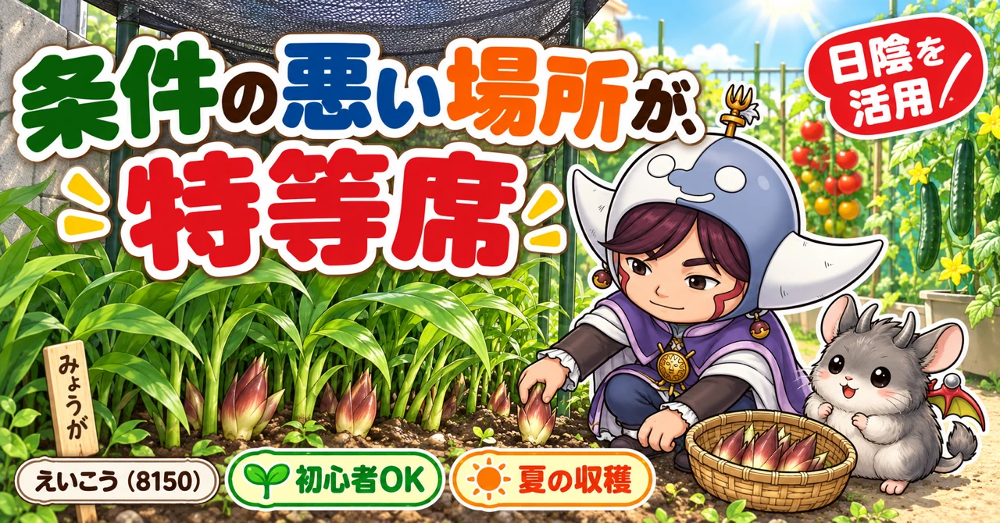
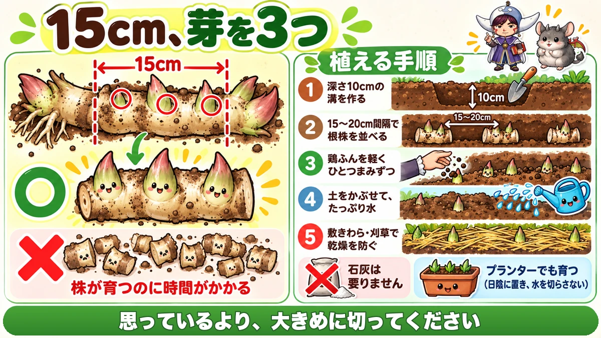
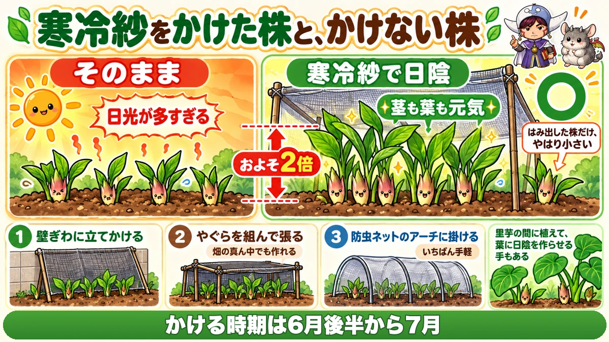
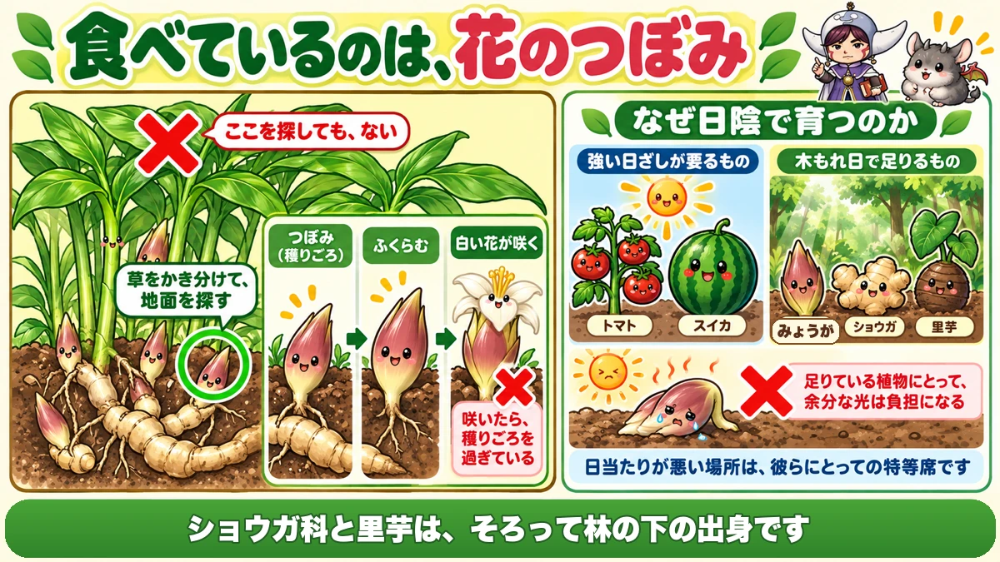

みょうが栽培の段取り帳｜日陰選び・植え付け・収穫と株分け

どうも、8150（えいこう）です🌱 家庭菜園歴8年、理科の教員免許を持っていて、有機・無農薬で野菜を育てています。
📖 この記事の目次
この記事で分かること
- 植える場所は、強い日ざしを避けられることと、土が乾ききらないことを組み合わせて選びます。
- 根株を分けるときは、定規の長さだけでなく、残る芽の数を確かめます。
- 植えた年に花みょうがが少なくても、葉が育っていれば翌年へ向けた準備が進んでいる可能性があります。
- 収穫するときは、葉の先ではなく地面に出るつぼみを探します。春の新芽とは別の収穫です。
- 何年も育てられますが、混雑と区画の外への広がりは点検が必要です。
- 深さ、株間、更新年数には異なる説明があります。このページでは幅を残し、条件を確認して選べるように整理します。
「庭のすみは日が当たらないから、野菜は難しいかな」。そう思っている場所が、みょうがの候補になることがあります。ただ、暗ければ暗いほどよい、という話ではありません。日ざし、水、地下茎が伸びる場所。この3つを見ておくと、植えたあとに困りにくくなります。
8150（えいこう）です🌱 このページは、みょうがを始めるときにも、育てていて迷ったときにも使える段取り帳にしました。順番に始めたいみなさんは『早見』から、すでに葉が茂っているみなさんは『失敗の見分け方』からどうぞ。
みょうがは、毎年まき直して短期間で収穫する野菜とは時間の使い方が違います。初年度の花の数だけで評価せず、翌年の葉や、数年後の混み具合まで見ていきます。なんか気の長い話に見えますが、大丈夫。今日決めるのは、まず植える場所だけでも十分です☺️
早見：みょうがの育て方（ひと目で分かる数字）
計画を立てるときの数字
- 植えるもの：芽の付いた地下茎です。『根株』として扱われる部分を分けて使います。種まきの日数で予定を立てる栽培ではありません。
- 植え付け時期：栽培の説明には12〜2月、2〜3月、芽が動く3月頃まで、という幅があります。植え替えには10〜12月または1〜3月という説明もあります。5月中に植える例もありますが、すべての地域で同じ月を適期とはしません。
- 地域差：寒冷地・中間地・暖地それぞれの確定した暦は、今回の材料にはありません。月を地域別に振り分けず、休眠中か、芽が動き始めているかを確認して予定を組みます。
- 根株の長さ：約15cmが複数の説明に出ます。ほかに10〜15cm、20〜30cmの方法があります。短く切ればたくさん増やせる、とは考えず、芽を残すことを優先します。
- 根株の芽数：3個程度、3〜4個、3個以上という説明があります。1〜5個という幅の例もあります。長さだけ整え、芽がほとんどない部分を作らないようにします。
- 植える深さ：5〜8cm、5〜10cm、約10cm、10〜15cmという説明です。植え穴の深さと、上にかぶせる土の厚さが混じる可能性があるため、同じ数字だと思って足しません。
- 株間：15〜20cm、最低20cm、30cm、30〜40cmという幅があります。大きい根株では40〜50cm空ける例もあります。根株の大きさを抜きにして、一つの標準へまとめないようにします。
- うね幅：共通する指定値はありません。置く根株の大きさ、株間、地面を見に行ける通路を先に決めます。収穫時に株元へ手が届く配置が大切です。
- 元肥の時期：地下茎を植える前の土づくりと、植え付け時に少量を補う方法があります。使う肥料の性質と表示を確認し、別々の方法の量を合算しません。
- 追肥の時期：夏の生育へ向けて、夏前に行う方法があります。1回で済ませる説明がある一方、冬の管理でも少量を補う例があります。『年中どの株も1回』という一律の決まりではありません。
- 追肥量：共通する確定量はありません。字幕の単位が不明な数字は使わず、土の肥料の履歴と、使う製品の表示を確認します。
- 花みょうがの収穫期：7〜9月の幅があります。7〜8月が中心の説明、8〜9月が中心の説明、早いタイプは7月末頃、遅いタイプは8月末〜9月という説明を分けて見ます。
- 初回収穫まで：植えた年は収穫が少ない、またはほとんど見込めない場合があります。翌年7月以降や翌年7月下旬頃からという説明があります。『植えて何日』の統一値はありません。
- 春の新芽の収穫：みょうがたけは4〜5月頃という説明があります。5〜6cm程度の新芽を採る例もありますが、この長さを花みょうがの目安には使いません。
- 地植えの更新：3年、3〜4年、3〜5年の目安があります。遅くとも5年とする説明もあります。葉の混雑や収量の変化も合わせて判断します。
- プランターの更新：2〜3年という説明があります。これは一つの栽培例の目安で、地植えと同じ周期に固定しません。
- 連作の間隔：何年間休ませるという共通の数字はありません。土を整え、地下茎の間隔を広げて同じ場所へ植え直す方法があります。更新年数と、別作物を挟む年数は違います。
数字より先に、場所の条件を確認する
早見だけで決めるなら、最初は『日ざし』『土の湿り方』『広がれる範囲』の3点を見てください。長さや深さを丁寧に測っても、真夏に一日中直射日光を受け、土が乾き続ける場所では、みょうがの苦手な条件が重なってしまいます。
半日陰は、昼間の一部に日陰ができる場所です。朝は明るく、午後の強い西日を避けられる配置が一例になります。木の下なら、光がちらちら通る場所も候補です。逆に、光がほとんど入らない場所まで『日陰好きだから大丈夫』と広げないでください。日が短い場所と、真っ暗な場所は分けて考えます。
湿り気も同じです。土が乾燥しにくいことは利点ですが、水がたまって逃げない場所を選ぶ理由にはなりません。雨のあとに様子を見て、水が残る場所か、しっとりした土へ戻る場所かを確認します。みょうが向きの場所を探すときは、晴れた日の観察と雨のあとの観察を一組にすると分かりやすいです。
- 真夏の午後に直射日光が続かないか確認した
- 雨のあと、水が停滞する場所を確認した
- 地下茎が広がってよい範囲を決めた
- 根株の大きさと芽数を見てから株間を選ぶことにした
- 初年度の収穫量だけで失敗と決めないことを確認した
植えた日と、株を分けた年はメモしておくと助かります。『これ、いつからここにおるんやろ』となっても、葉を見ただけでは年齢が分かりませんからね。日付が一つ残っているだけで、株分けを考えるときの手がかりになります。
作業の手順（時期の順）
1．何年も使える場所を決める
- 庭や畑の候補を見て、木陰、建物の影、軒下など、強い日ざしを避けられる場所を探します。
- 午前と午後で日の当たり方を見ます。とくに午後の西日が長く当たるかを確認します。
- 雨のあとに水が逃げるか、乾燥が続くと土がどうなるかを確認します。
- 隣の区画、通路、ほかの野菜との境界を決めます。今は空いていても、数年後に地下茎が伸びることを予定に入れます。
- 日陰が不足するなら、日よけを設置できる場所かも調べます。
みょうがを植える場所は、今年だけの空きスペースではありません。次の季節もその次の季節も使うので、ほかの野菜を順番に育てる場所の真ん中より、管理する範囲が決めやすいすみの方が計画を立てやすくなります。
ただし、すみならどこでもよいわけではないです。隣の畑との境界ぎりぎりは、伸びた地下茎の行き先が問題になります。『日陰があるからここ！』のあとに、『この先、広がっても見に行けるかな』を一つ足してください。目立たない場所ほど、増えたことも見落としやすいんですよね。
軒下を選ぶときは、日陰であることと、雨が土へ届くことを分けて見ます。候補地の名前だけで判断せず、実際に土を確認するのが近道です。日よけがあるのに乾く場所なら、水やりの段取りも一緒に考えます。
2．休眠中から新芽の前を中心に、植える予定を組む
- 手元の株が休眠している地下茎か、すでに芽が伸びた株かを確かめます。
- 買う場合は根株の表示を読み、植え付けの案内を確認します。分けてもらう場合は、掘り上げや株分けの予定を合わせます。
- 休眠中の植え替えなら、冬から芽が動く前の時期を中心に計画します。
- 秋の植え替えや春の遅い植え付けを選ぶ場合は、同じ条件の説明かを確認してから進めます。
- 植える日だけでなく、次の夏に土を見に行けるか、水やりできるかも予定へ入れます。
植え付け時期を『2月』の一言で覚えるより、『地下茎が休んでいる間に、次の芽を準備する』と考える方が、実物を見たときに迷いにくくなります。12〜2月の説明と2〜3月の説明は、この時期を別の切り口で案内している可能性があります。ただ、地域の差だと決めつけて数字を振り分ける根拠はありません。
春に売られる根株を入手して植える方法もあります。過去の栽培説明では2〜3月や2〜4月の入手時期が挙げられていますが、店ごとの今の販売期間を保証するものではありません。買える月と植え替えの月も同じとは限らないので、予定表では分けておきます。
3．土を整え、増える範囲への対策を済ませる
- 乾き続ける場所、雨水が停滞する場所をそのまま使わず、土の状態を先に整えます。
- これまで入れた肥料を確認し、元肥を使うなら製品の表示に沿って用意します。
- 地下茎を並べる範囲と、株元を見られる通路を決めます。
- 隣へ伸びるのが困る場所では、植え付けの段階で地中の仕切りを検討します。
- 仕切りを使っても、境界の点検を続ける予定にします。
地中に板や波板を入れ、地下茎の進路を遮る施工例があります。幅約30cmの板、約20cmの溝という例が出ますが、これは地下茎を絶対に止める保証寸法ではありません。すき間の処理や、何年も使ったときの効果まで、そろった材料があるわけではないからです。
ここでは、施工例の数字を『この深さならもう安心』へ変えないことが大切です。とくに借りている畑では、自分の区画の中で増えていることと、隣へ入り込むことでは困り方が違います。地中を仕切る方法は選択肢として考えつつ、外側に新しい芽が出ていないかも見ます。
土へ入れる肥料についても、一律の配合は置きません。元肥の量には、字幕の単位が読み取れない箇所があります。『たぶんこの量』で補わず、確かめられた方法と手元の製品表示を使います。土づくりの数字がないからといって、肥料を多く入れれば穴埋めできるわけではありません。
4．地下茎を分け、芽を残す

- 株分けする場合は、地上部の下にある地下茎を掘り上げます。
- 太さと芽の位置を見て、どこで分ければ複数の芽が残るかを確認します。
- 約15cm、芽3個程度を目安にする方法なら、先に芽を数え、それから切る位置を決めます。
- 10〜15cmや20〜30cmの別方式を使う場合は、その方式の株間や深さと組み合わせて考えます。
- 小さく刻みすぎず、植える場所の数に合わせて使う根株を選びます。
『長さは合っているのに、芽は一つもない』では、切り分けの目的から外れてしまいます。地下茎のどこからでも同じように芽が出る前提で、定規だけを見て切らないでください。長さの目安は便利ですが、育つ入口になる芽の確認が先です。
細かく分ければ、その日の根株の数は増えます。でも、その数がそのまま収穫できる株数になるわけではありません。短くしすぎると出る芽が減り、株が育つまでに時間がかかることがあります。『増やせた！』と『育つ準備ができた』は別なんですね。
図は約15cm・芽を複数残す方式の補助として見てください。本文にはほかの長さの説明も残しています。図の数字が一つだからといって、すべての根株をその長さへ切りそろえる必要はありません。
5．間隔を決め、芽を傷めずに植える
- 根株の大きさを確認し、使う方法の株間で配置を決めます。
- 植え溝や穴を用意します。深さの案内が穴そのものを指すか、上へかける土を指すかを確かめます。
- 芽が上を向くように地下茎を置きます。
- 芽を折るほど押しつけず、土を戻します。
- 土が乾いていれば十分に水を与え、植えた位置と日付を記録します。
植え付けは、力を入れて固定する作業ではありません。芽が付いたものを土へ戻すので、『しっかり押さえよう』で芽までつぶさないことが大切です。並べる段階で芽の向きを確認しておくと、土をかけたあとに迷わずに済みます。
深さを決めるときは、二つの数字を足さないようにします。例えば、深さ10cmの植え溝という説明と、別の方法の覆土の説明を組み合わせて、さらに厚く土をかける、という進め方は避けます。一つの手順を選び、その手順の中で深さを理解してください。
植えてすぐに花の数を期待しすぎなくても大丈夫です。まず確認したいのは、芽が動き、葉が育つこと。植えた日だけでなく、葉が出た日も残せると、翌年の動きと比べやすくなります。
6．プランターなら、容器と置き場所をセットで決める
- 地下茎が育つ余裕のある、大きめの容器を選びます。深さ約30cmのプランターを使う説明があります。
- 半日陰に置き、夏の午後にどう日が当たるかを確認します。
- 水を与えたあとに排水するかを見ます。
- 土が乾く様子を見て、水やりの間隔を調整します。
- 植えた年を記録し、地植えより早めに混雑を点検します。
プランターでも栽培できますが、『北側に置けば、あとは地植えと同じ』ではありません。地植えより土が乾きやすいので、水やりを続けられる場所かが大事になります。日陰であることに安心して、土を見る回数まで減らさないようにしてください。
容器の深さ約30cmは一つの説明の目安です。必要な容量を全国共通の数字へ広げたり、何株なら必ず収まると決めたりはしません。大きい根株を入れる場合と、小さく分けた地下茎を入れる場合では、最初の混み具合が違います。
7．春の新芽を確認し、採る株と残す株を分ける
- 春になったら、植えた場所の芽を確認します。
- 新芽をみょうがたけとして採る場合は、花みょうがを収穫したい株を先に残します。
- すべての新芽を収穫しないよう、採る範囲を決めます。
- 残した芽が葉を広げていく様子を見ます。
- 初年度はとくに、花の数だけでなく葉の生育を確認します。
春の新芽が食べられると知ると、出てきたものを全部採りたくなるかもしれません。でも、その芽はこれから葉を広げる側でもあります。夏の花みょうがを楽しみたいなら、葉を育てる株を残してください。
何本採ればよいか、何割残せば十分かという共通の数字はありません。そこで『半分なら必ず大丈夫』などと決めません。初めて育てる年は、葉を増やすことを優先するという考え方もできます。収穫を急がず、来年へつなぐ方を選んでもちゃんと栽培です。
8．夏前に日よけと水やりを整える

- 葉が出たら、今の株全体にどの時間帯の光が当たるかを見ます。
- 強い西日や長い直射がある場合は、寒冷紗などで日陰を作ることを検討します。
- 葉の高さに余裕を持たせ、覆いの端から株がはみ出していないかも確認します。
- 土の湿り方を見て、乾燥が続く場合に水を補います。
- 追肥する方法を選んだ場合は、株の周りで行い、地下茎を傷める深い掘り返しを避けます。
遮光の設備には、高さ約1mや約130cmという施工例があります。葉の背丈を60〜70cm程度とする説明に合わせ、低い覆いでは余裕がなくなることを見込んだ方法です。数字だけを再現するより、育った葉がつかえないか、株全体を覆えるかを見るのが大切です。
寒冷紗の遮光率は49％の実例と、50〜60％を使う案があります。これは必要な日照時間の数字ではありません。遮光率が半分だから半日しか光が当たらない、という計算にはならないんですね。設置する向きと、光を弱める程度を別々に考えます。
図の『倍』は、日陰を作った株と作らなかった株を比べた一例に基づく表現です。収穫量が必ず2倍になるという保証ではありません。みなさんの場所では、日ざしに加えて土の乾燥も確認してください。日陰になっていても、水が足りなければ十分に大きく育たないことがあります。
9．夏から秋は、株元のつぼみを確認する
- 収穫期が近づいたら、葉の上ではなく株元の地面を見ます。
- 表面を覆っているものがあれば、そっとよけて地際を確認します。
- 顔を出した花みょうがのつぼみを見つけます。
- 開花前かを確認して収穫します。まだ小さなものは土を戻して育ちを待つ方法もあります。
- 一度採って終わりにせず、次につぼみが出ているかを確かめます。
地面を見る作業なので、植え付けのときに通路を用意しておくと、ここで助かります。葉がよく茂るほど、上から眺めただけではつぼみを見落としがちです。葉の大きさを確認する日と、つぼみを探す日では、見る高さを変えます。
開花前に採ることは、収穫月を一つに決めることより大切です。7月に採れる株もあれば、8〜9月が中心の株もあります。『もう8月を過ぎたから、探さなくていい』と暦だけでやめないでください。育てている株に実際につぼみが出ているかを見ます。
10．冬は枯れた地上部を整理する
- 葉が完全に枯れたことを確認します。
- 地上部を片づけます。株元を約2cm残して切る、切り口を少し斜めにするという手順の例があります。
- 枯葉や収穫残りを整理します。
- 藁などで表面を覆う方法を使い、冬の乾燥や寒さに備えます。
- 混雑している株は、この休眠期から新芽の前に行う株分けの計画へつなげます。
地上部がなくなると、『なくなってしまった？』と心配になりますが、冬に枯れる部分と、土の中に残る部分を分けて考えます。多年草であるみょうがは、地下茎を残して次の芽につなぎます。葉が消えたから、植えた場所の記録も不要になるわけではありません。
冬も土を乾かし続けないことが大切です。ただ、気温が下がったら毎日何回水やりする、という共通の回数はありません。乾燥しているか、水が停滞していないかを見て対応します。凍結する地域の最低温度や、必要な覆いの厚さについては、この材料から一律に案内できません。
11．数年後は、地下茎の混雑をほどく
- 植えた年と、最近の葉や収穫量の変化を確認します。
- 混み合った株を、休眠期から新芽の前の時期に掘り上げます。
- 芽の付いた地下茎を分け、使う根株を選びます。
- 土を整え、地下茎の間に再び空間ができる配置で植え直します。
- 外へ広がった芽や、境界の状態も一緒に確認します。
株分けの目的は、ただ株数を増やすことではありません。地下茎が伸びる空間を作り直し、土の状態を整える作業でもあります。同じ場所へ戻す場合でも、全部を掘って、そのまま同じ密度で戻しただけでは、混雑をほどいたことになりません。
更新の目安は地植えで3〜5年の幅があります。『5年までは何も見なくていい』という猶予ではなく、そろそろ地下の様子も考える時期だと受け止めます。プランターは2〜3年という説明もあるので、容器の中で育てる場合は、地植えの年数だけを待たずに点検してください。
失敗の見分け方（症状→原因→やること）
葉は育ったのに、花みょうがが見つからない
- 症状：葉が広がっているのに、地面に収穫できるつぼみが見つかりません。
- 考えられる原因：植えた年で地下茎が育つ途中、まだその株の収穫期ではない、葉の上だけを見て地際を探していない、という可能性があります。
- やること：植えた年と月を確認し、株元の地面を調べます。葉が元気な初年度なら、花が少ないだけで抜かず、翌年への生育を見ます。
初年度の花の少なさを、すぐ肥料不足へ結びつけないでください。みょうがには、葉で作った養分を地下茎へため、翌年の成長につなげるという説明があります。葉が育っている事実も、判断材料です。
とくに株を分けて植え直した直後は、以前の大株と同じ収量を期待すると、足りなく感じやすくなります。植え替え前と後では地下茎の大きさや配置が変わっています。今年の花の数だけで結論を出さず、葉、土、時期を一緒に見てください。
日陰なのに、株が十分に大きくならない
- 症状：日よけを用意したのに、葉や株の生育が物足りなく感じます。
- 考えられる原因：土が乾いている、覆いの外へ株が出て直射を受けている、根株の芽が少ない、切り分けが小さすぎた、などが考えられます。
- やること：日陰かどうかだけで終えず、土の湿り方と株全体への光を確認します。植え付け記録があれば、根株の長さと芽数も振り返ります。
日よけの下に一部が入っていれば、株全体が同じ環境になるわけではありません。覆いの端を越えた株では、日の当たり方が変わります。午後に見に行くと、朝には気づかなかった直射が分かる場合もあります。
水が不足していると分かったら、日よけをさらに暗くする前に水分を補います。一方、日照の不足が疑われる場所を、日陰を好むという理由だけでさらに覆うのも順番が違います。『日よけを足す』『水を足す』の前に、今の不足がどちらかを見るのが大切です。
花みょうがが小さく、乾いた感じになる
- 症状：つぼみが大きくならず、食感も乾いた感じになります。
- 考えられる原因：強い日当たりと乾燥が重なっている可能性があります。日陰でも水分が足りない場合があります。
- やること：地面が乾く様子を確認し、水分を補う段取りと日ざしを避ける配置を見直します。つぼみだけでなく、土と葉の状態を調べます。
水を与えた直後の見た目だけでは、乾燥が続いていたか分かりません。晴天が続くときに土がどうなるかも確認してください。プランターなら、雨が降ったという理由で容器の中まで湿ったと思い込まない方が、判断しやすくなります。
土がいつもびしゃびしゃで、育ちが悪い
- 症状：水が逃げず、土が常にぬれすぎた状態で、生育もよくありません。
- 考えられる原因：水の停滞によって根が傷んでいる可能性があります。乾燥対策として水を足し続けたことも確認します。
- やること：追加の水だけで解決しようとせず、雨水や水やりの水が逃げるかを調べます。排水と置き場所を見直します。
『水を好む』と『水がたまったままでよい』を混ぜないことが、ここではいちばん大切です。たっぷり与える説明は、常時水をためる指示ではありません。土の状態を見ずに回数だけ増やすと、乾燥とは反対の問題へ進んでしまいます。
育ちが悪い原因を、見た目だけで根腐れと断定することも避けます。ただ、水の停滞が確認できるなら、その状態を放置して追肥へ進むより、まず土の湿り方を整える方が順序として分かりやすいです。
数年前より、花みょうがが減ってきた
- 症状：以前は採れた株なのに、年数がたつにつれて収量が落ちてきました。
- 考えられる原因：地下茎の混雑、土の水分不足、肥料の不足などが候補です。猛暑の影響も考えられますが、それだけと決めつけません。
- やること：植えた年、株の密度、日ざし、土の状態を順に見ます。数年育てて混み合っているなら、休眠期の株分けを予定します。
葉がたくさん出ていると、『元気やから、このままでええかな』となりやすいです。でも、地下茎が密になっているかどうかは、葉の勢いだけでは判断できません。更新年数と収穫の変化を重ねて見ます。
水も肥料も足りなかった株で芽数が少なかった、という材料はあります。ただし、その話から、収量が落ちた株には必ず肥料を増やすと決めることはできません。混雑をそのままにして施肥量だけ増やしても、地下茎が伸びる空間は広がらないからです。
植えた範囲の外に、新しい芽が出る
- 症状：通路や隣の区画など、予定していない場所から芽が出ます。
- 考えられる原因：地下茎が植えた範囲の外へ伸びている可能性があります。
- やること：出た芽だけでなく、地下茎の広がりを確認します。収穫期を避けた掘り上げや株分けを検討し、境界への対策も見直します。
地上の芽を切ったことと、地下の広がりを片づけたことは同じではありません。地下茎がどこまで伸びたかを確かめる必要があります。ただし、何年かかれば完全に除去できる、どの深さまで掘れば残らない、という数字は今回の材料にはありません。
増殖する性質は、株を分けて使いたいときには便利です。境界を越えるときには管理の課題になります。性質が急に変わったのではなく、伸びた先が変わったわけです。育て始める時点で、広がってよい範囲を決めておく意味がここにあります。
つぼみを見つけたときには、もう花が開いている
- 症状：地面を探すと、開花した花みょうがが見つかります。
- 考えられる原因：地際の確認が遅れ、つぼみの段階を過ぎた可能性があります。
- やること：次につぼみが出る場所を確認し、開花前に気づけるよう株元を見る機会を増やします。月末の一度だけの点検にはしません。
開花後は味が落ちるという点は、複数の説明に共通します。だから収穫では、『今月は何月か』のほかに『このつぼみは開いたか』を見ます。あと何日待ってよいかという共通の猶予日数はないので、小さいつぼみから開花までの様子を実物で確かめていきます。
春の新芽を全部採り、夏に残る葉が少ない
- 症状：みょうがたけを収穫したあと、葉を育てる芽があまり残っていません。
- 考えられる原因：食べる新芽と、花みょうがのために残す株を分けずに収穫した可能性があります。
- やること：残っている芽と葉を確認し、以後は育てる側を優先します。次の春は、採り始める前に残す範囲を決めます。
春と夏の収穫を、どちらも全部取り切れる二つの独立した予定にしないことが大切です。同じ地下茎につながる生育なので、春の収穫が、その後の葉の準備へ影響します。『年2回楽しめる』は、どちらも十分な量を必ず採れるという保証ではありません。
冬に葉がなくなり、枯死したか心配になる
- 症状：寒い時期に地上部が枯れ、植えていた場所が空いたように見えます。
- 考えられる原因：冬に地上部が枯れる季節の変化の場合があります。ただし、地下茎まで傷んでいないかは、葉がないことだけでは判断できません。
- やること：植えた場所を記録と照らし合わせ、枯れた地上部を整理します。土の乾燥や水の停滞を確認し、次の芽の時期へつなげます。
葉がないことだけで『全部なくなった』と決めて、新しい野菜の場所に変えてしまわないでください。冬は地上の姿が小さくなるだけで、地下茎を管理する場所は続いています。株分けを行うなら、その場所を把握していることが作業の出発点になります。
説明が分かれていること
日陰は、半日がよいのか、もっと暗い方がよいのか
- Aという説明：木漏れ日や半日陰を選び、朝日を残して午後の西日を避けます。
- Bという説明：建物や木の影など、日照時間が短く、日の当たりが悪い場所を勧めます。
- どう考えればよいか：どちらにも、強い直射と乾燥を避けるという共通点があります。必要な日照時間の統一値はなく、『何時間以下なら合格』にはしません。
日陰の度合いを一つの数字へ置き換えようとすると、判断が難しくなります。まず、真夏の強い光が続く時間帯を避けられるかを見ます。そのうえで、葉が育っているか、土が乾いていないかを確認してください。『暗い方が好き』から『光がなくても育つ』へ話を飛ばさないことが大切です。
植える月は冬なのか、春なのか
- Aという説明：12〜2月、または休眠中から3月頃の芽が動く前までに植えます。
- Bという説明：春の2〜3月を中心に植えます。植え替えには10〜12月や1〜3月、別の植え付け例には5月中という案内があります。
- どう考えればよいか：休眠株の移動、市販根株の植え付けなどの条件を確認します。時期の違いを、根拠なく地域差だけで説明しません。
『冬か春か』の二択にすると、同じ休眠期を違う月で案内している可能性が見えなくなります。一方で、5月の例まで含めて『いつでもよい』とするのも広げすぎです。使う株の状態と、その方法の前提を確かめて予定を立てます。
根株は15cmで切りそろえるべきか
- Aという説明：約15cmで、芽3個程度または3個以上を残します。
- Bという説明：10〜15cmで芽1〜5個という幅や、太い地下茎を20〜30cmに分ける方式があります。
- どう考えればよいか：複数の芽を残すこと、細かくしすぎないことが共通の判断です。別方式の長さだけを抜き出して、同じ株間へ押し込まないようにします。
長い地下茎なら何でもよい、短ければ必ず失敗、という境界ではありません。芽の数と根株の太さを見る必要があります。とくに自分で分ける場合は、切る前に芽の位置を見ます。切ったあとで『芽を3個にしよう』と思っても、もう切り戻せませんからね。
深さの5〜15cmを、どう読むか
- Aという説明：5〜8cm、5〜10cm程度と、比較的浅い数字が示されます。
- Bという説明：約10cm、10〜15cmの植え溝や穴を使います。
- どう考えればよいか：穴の底までの深さか、地下茎の上の土の厚さかを分けます。平均して10cmにすれば全部の方法を代表する、とはしません。
数値が違うと、『どちらが正しいんやろ』と気になりますよね。でも、測っている位置が違えば、数字の比較自体がずれます。根株を置く位置と土を戻した状態を一組として読み、選んだ方法の中でそろえてください。
株間は20cmでよいのか、30cm以上が必要か
- Aという説明：15〜20cm、あるいは最低20cmの間隔です。
- Bという説明：30cm、30〜40cm、大きい根株では40〜50cmという間隔です。
- どう考えればよいか：根株の大きさや、分けた長さの違いを残して見ます。最大の根株と最小の株間を組み合わせ、詰め込む計画にはしません。
最初に多く植えられることと、数年後も管理しやすいことは別です。みょうがは地下茎が増えるので、植え付け当日のすき間だけで余裕を判断しないようにします。株元を見に行く通路も含めて、後の収穫や株分けまで考えると選びやすくなります。
水をたっぷり与える説明と、過湿を避ける説明
- Aという説明：乾燥させず、十分な水を与えます。湿った場所の方がよく育つという説明があります。
- Bという説明：常にびしゃびしゃで、水が停滞する場所は根腐れを招くので避けます。
- どう考えればよいか：一度に与える水と、その後もたまり続ける水を分けます。土に湿り気を保つことと、排水がない状態を作ることは違います。
この二つは、どちらか片方を捨てる話ではありません。乾燥しやすい場所では水を補い、停滞する場所では水の逃げ方を整えます。水やりの回数にも統一値はありません。同じ字幕内でも回数の表現が分かれるので、毎日2回などの予定を全員へ当てはめません。
追肥は1回でよいのか
- Aという説明：夏前の追肥を、その生育期の1回として行う方法があります。
- Bという説明：冬の管理でも少量を補う方法があります。別の材料には月ごとの追肥らしい記述がありますが、音声と字幕が不鮮明で回数を確定できません。
- どう考えればよいか：確かな1回の方法と、不確かな月ごとの記述を、同じ強さの両論として並べません。土に何を入れてあるか、どの季節の施肥かを確認します。
分からない数字を埋めるために、追肥の回数を増やす必要はありません。量にも読み取れない単位があります。ここでは、根を傷つける深い掘り返しを避けることと、製品の表示を確認することを優先します。『少量』『ひとつまみ』を別の単位へ勝手に換算しないことも大切です。
更新は3年、4年、5年のどれか
- Aという説明：3年ごと、または3〜4年ごとに株分けします。
- Bという説明：3〜5年、遅くとも5年で植え替えます。プランターには2〜3年の目安もあります。
- どう考えればよいか：年数と株の混雑、収量の変化を合わせます。地植えと容器栽培を同じ周期に固定しません。
年数は、点検を始める目安として役立ちます。でも『4年目のこの日に、急に全部悪くなる』という時計ではありません。地下茎が育つ空間を作り直す作業なので、日付と実物の両方を見てください。更新後に同じ場所へ戻す場合も、間隔と土の環境を整えます。
収穫は8月までか、9月も続くのか
- Aという説明：7〜8月を中心に採り、穫り遅れないようにします。8月中という締切に近い言い方の例もあります。
- Bという説明：7〜9月、8〜9月、遅いタイプなら8月末〜9月が収穫期です。
- どう考えればよいか：8月中の一例を、すべての株の締切にしません。正式な品種名は確定できないため、名前を補わず、実際のつぼみと開花を見ます。
早く出る株と遅く出る株を、同じ月の同じ基準で不作と判定しないようにします。月は探し始めるための目安で、目の前のつぼみの採りどきは開花前です。暦とつぼみの状態を、別の役割として使ってください。
石灰は、いつも省いてよいのか
- Aという説明：石灰を使わずに植える方法があります。酸性の土でも育てるという説明もあります。
- Bという説明：pH6.0〜6.5を目安とし、実測が6.5だったので石灰を入れなかった例があります。
- どう考えればよいか：何も測らず、どの土でも不要と断言はしません。数字が小さいほど酸性寄りという意味を知り、手元の土の状態を見ます。
石灰を省いたという結果だけでなく、なぜ省いたかも確認する必要があります。もともとの土の酸度を確認した方法と、測らずに毎回同じ処理をする方法は違います。不要な作業を減らすことと、土を調べなくてよいことを一緒にしないでください。
よくある質問
種から始めるのですか
このページで扱うのは、芽の付いた地下茎から始める方法です。
根株を購入するか、育てている株を分けて使います。
種まきから何日で収穫する、という予定とは分けて考えてください。
庭の日陰を使えますか
木陰や建物の影などは候補になります。
ただし、光がほとんど入らない場所まで同じとは考えません。
強い日ざしを避けられるか、土が乾き続けないか、水が停滞しないかを見ます。
午前中だけ日が当たる場所でもよいですか
朝日を残し、午後の西日を避ける配置は一つの方法です。
必要な日照時間を何時間と決められる材料はありません。
葉の生育と土の湿り方も確認して、場所を評価してください。
日よけを付ければ、収穫量も2倍ですか
必ず2倍になるとは言えません。
日陰ありの株が大きくなった比較例はありますが、株の大きさと収穫量は別です。
日よけだけで終えず、土の水分も確認します。
プランターなら、どれくらい深いものを使いますか
深さ約30cmの大きめの容器を使う説明があります。
これは一例で、共通の最低容量や株数までは確定できません。
半日陰の置き場所、乾燥への水やり、排水をセットで考えます。
根株は短く切るほど増えますか
切った数は増えても、育つ準備が十分になるとは限りません。
芽を複数残し、細かくしすぎないことを優先してください。
約15cmの方式のほか、10〜15cmや20〜30cmの方法もあります。
植える深さは10cmと覚えてよいですか
約10cmの説明はありますが、5〜8cm、5〜10cm、10〜15cmの幅もあります。
穴の深さと覆土の厚さを分け、選んだ方法の中で確認します。
異なる説明の数字を足して、深く埋めないようにしてください。
植えた年に採れなかったら、失敗ですか
初年度はほとんど収穫できない場合もあります。
葉が元気なら、翌年の成長に向けて地下茎を育てる途中の可能性があります。
年数、収穫期、株元の確認を先に行い、花の数だけで抜かないでください。
みょうがは葉の先にできますか
食べる花みょうがは、地下茎から地際へ出るつぼみです。
葉の上の方を探しても、収穫場所の確認になりません。
葉を傷めないように、株元の地面を見てください。
収穫サイズを何cmと決められますか
花みょうがの共通する長さの基準は、今回の材料にはありません。
地面から顔を出したつぼみを、開花する前に確認して採ります。
春の新芽を5〜6cmで採る例と、花みょうがの基準を混ぜないでください。
花が開いてから、何日待てますか
共通する猶予日数はありません。
開花後は味が落ちるため、つぼみのうちに採ることを目標にします。
収穫期には、月だけでなく、目の前のつぼみが開いたかを見ます。
みょうがたけも全部収穫してよいですか
夏から秋の花みょうがを育てたいなら、葉を育てる株を残します。
春の新芽をすべて採ると、その後の生育につながる芽が減ります。
採る割合の共通値はないので、残す範囲を先に決めてください。
毎日水をやる必要がありますか
共通の回数は決められません。
地植えかプランターか、日ざしや雨で土の乾き方が違います。
乾燥を防ぎつつ、水が停滞しないよう土を見て調整します。
肥料が少ない野菜なら、何も入れなくてよいですか
その土に必要かどうかは、元肥の履歴や生育で考えます。
施肥する方法もあり、水や肥料不足で芽数が少なかった例もあります。
不確かな量を補わず、確かめられる製品表示と方法に沿って使います。
同じ場所へ植え直してもよいですか
土を整え、地下茎の間に空間を作って、同じ場所へ戻す方法があります。
ただ掘り上げて元の混雑した状態へ戻す作業とは違います。
株分けの年数を、連作を休む年数へ置き換える必要はありません。
何年も放置して採れ続けますか
多年草として続けて育てられますが、混雑や収量低下の点検は必要です。
地植えの更新には3〜5年の幅、プランターには2〜3年の目安があります。
境界の外へ伸びる地下茎も確認してください。
仕切り板を入れれば、増えすぎは解決しますか
地中へ板を入れて進路を遮る方法はあります。
ただし、絶対に越えない深さや、長年の効果までは確定できません。
施工後も、予定した範囲の外に芽が出ていないかを点検します。
冬に葉が枯れても、水の管理は続けますか
地下茎が残るので、土の乾燥と水の停滞の確認は続けます。
冬の水やり回数を一律には決めません。
地上部を整理し、表面を覆う方法も取り入れて次の春へつなげます。
野外で似た植物を見つけたら、採って食べられますか
この栽培記事だけで、野外の植物を同定することはできません。
見た目が似ている、日陰に生えている、という理由だけで食用と判断しないでください。
育てるときは、みょうがと確認できる根株から始めます。
学ぶ：地下茎と花みょうがのしくみ🔬

土の下にも『茎』がある
みょうがの株を掘ると、土の中を横へ伸びる部分があります。この部分が地下茎です。文字どおり、地下にある茎ですね。『土の下にあるから全部根』と思うと、芽の付いた部分を分けて植える意味が分かりにくくなります。
地下茎には芽があります。切り分けたものから新しい地上部を育てるため、根株を分ける手順では芽数を確認します。約15cmという長さが何度も出てきても、長さが成長のスイッチというわけではありません。育つ芽を残せているかを見る数字なんですね。
この見方が分かると、増えすぎへの対応も少し整理できます。地上で別の場所に芽が出ていても、土の下では横へ伸びた地下茎につながっている可能性があります。葉が見えている場所だけが、その株の範囲とは限りません。だから、境界の点検には地下の広がりという視点が必要です。
葉を育てる芽と、食べるつぼみを分ける
地上に伸びる新芽は、葉を広げる側の生育につながります。春に食べるみょうがたけは、この新芽を収穫するものです。一方、夏から秋に探す花みょうがは、地下茎から地際へ出る花のつぼみです。
同じみょうがでも、収穫している部分が違います。春の新芽の長さを、夏のつぼみの長さの基準にできないのは、そのためです。探す位置も違います。葉が伸びた先に花みょうがが付くと思っていると、株はよく見ているつもりでも収穫する部分を見逃してしまいます。
ここで図を見て、地上の葉と地際のつぼみを別々に確認してみてください。難しい名前を覚えるより、『葉を見るときは上、花みょうがを探すときは下』と、目線を動かす方が畑では役立ちます。理科の分類も、見る場所が変わると急に実用になります☺️
初年度の葉は、翌年への準備でもある
葉が広がると、光合成で養分を作ります。その養分が地下茎へ蓄えられ、翌年の成長につながるという説明があります。だから、植えた年に花が少ないことと、株全体が何も育っていないことは同じではありません。
もちろん、葉があれば何も確認しなくてよいわけではないです。土の乾燥、強い日ざし、混雑などは点検します。ただ、初年度の花の数だけを成績表にすると、地下で進む準備を見落としてしまいます。多年草は、今年の収穫と、次の年へ残す生育を両方見る植物です。
春の新芽を残す理由も、この流れにつながります。食べられる部分だから全部採る、という予定では、葉を育てる側を減らしてしまいます。夏に食べたいものがあるなら、その前に育てる部分も必要になるわけです。収穫を少し待つことが、次の収穫の準備になります。
日よけと水は、別々の問題を整える
日陰を作った株が大きくなった比較例には、強い光を避けることの意味が見えます。ただし、半日陰でも土の水分が足りなければ肥大が十分に進まないという注意もあります。『光を弱めたから、水の条件も整った』とは考えられません。
植物を見るときに、原因を一つに絞りたくなることがあります。日陰の野菜だから日陰だけ、水好きだから水だけ。こう覚えると簡単ですが、実際の株には光と水が同時に関わっています。対策をしたあとも、変えていない方の条件を確認することが大切です。
その一方、水が停滞した状態は別の問題になります。湿り気を好むという特徴を知っていても、排水を無視してよいわけではありません。『土が乾ききらない』『水が逃げる』の二つを、同時に満たせるか見てください。
株分けは、地下の住まいを作り直す作業
地下茎が伸びて増えると、同じ範囲の中で混み合います。株分けでは、芽のある地下茎を選び、間隔を広げ、土の環境も整えます。何年も育てられる性質を使うために、伸びる空間を作り直しているんですね。
『植え替える』という言葉には、場所を変える印象もあります。でも、同じ場所を使う方法でも、空間と土を整える更新はできます。場所を移したかどうかだけでなく、混雑した状態を解消できたかが作業の目的になります。
育て始めるときには、みょうがが増えることが楽しみになるかもしれません。数年後は、増えたものをどう残すかが仕事になります。同じ性質を、時期によって違う視点で扱う。多年草の栽培は、収穫の数だけでなく、この変化を観察する面白さもあるかなと思います。
まとめ
みょうがの栽培は、『日陰を探して植える』から始められますが、そのあとに水分と地下茎の広がりを見ると、長く育てる段取りが立てやすくなります。最後に、今の段階ごとに確認することをまとめます。
これから植えるみなさんへ
- 午後の強い日ざしを避けられる場所を選ぶ
- 湿り気だけでなく、雨のあとの排水も確認する
- 地下茎が伸びてよい範囲と通路を決める
- 根株の長さだけでなく、芽を複数残せるかを見る
- 深さと株間は、同じ方法の条件をそろえて選ぶ
- 植えた日と場所を記録する
葉が育っているみなさんへ
- 日よけの外へ株が出ていないかを見る
- 土が乾いているのか、水が停滞しているのかを分ける
- 春の新芽を採る場合は、葉を育てる株を残す
- 花みょうがを探すときは、株元の地面を見る
- 収穫月だけで決めず、つぼみが開く前に確認する
- 初年度の花の少なさだけで、失敗と決めない
何年か育てているみなさんへ
- 植えた年と、最近の収穫量の変化を照らし合わせる
- 地植えは3〜5年の更新目安を、株の混雑と合わせて考える
- プランターは2〜3年の目安も参考に、容器の中の混雑を点検する
- 境界や通路に、新しい芽が出ていないかを見る
- 冬に地上部が枯れても、地下茎の場所を管理する
- 株分けでは、地下茎の間に空間を作り直す
数字がたくさん出てきましたが、全部を暗記しなくて大丈夫です。根株を切るときは芽数、夏のお世話では光と土、収穫では地際のつぼみ、数年後は地下茎の混雑。そのとき必要なところへ戻ってきてください。
最後まで読んでくださって、ありがとうございます。まずは、植えたい場所を午後に見てみる、育っている株の地面をそっと確認する、そのどちらか一つからで十分です。みょうがの都合を一つずつ見ていけば、次にやることも選びやすくなるかなと思います🌱
敷きわら
みょうがは日陰と湿り気を好みます。敷いておくと乾きません。
![[商品価格に関しましては、リンクが作成された時点と現時点で情報が変更されている場合がございます。]](https://hbb.afl.rakuten.co.jp/hgb/56bc2fb2.ff40a6e6.56bc2fb3.618f6a70/?me_id=1257026&item_id=10000211&pc=https%3A%2F%2Fthumbnail.image.rakuten.co.jp%2F%400_mall%2Fsharuka%2Fcabinet%2F09042254%2Fimgrc0081094692.jpg%3F_ex%3D240x240&s=240x240&t=picttext "[商品価格に関しましては、リンクが作成された時点と現時点で情報が変更されている場合がございます。]")

腐葉土
もともと林の下に生える植物なので、落ち葉が積もったような土を好みます。

もみ殻くん炭
植えっぱなしで何年も穫る野菜なので、土がしまらないようにしておきます。
![[商品価格に関しましては、リンクが作成された時点と現時点で情報が変更されている場合がございます。]](https://hbb.afl.rakuten.co.jp/hgb/56bc30bc.01c5b89d.56bc30bd.ee310357/?me_id=1231595&item_id=10000412&pc=https%3A%2F%2Fthumbnail.image.rakuten.co.jp%2F%400_mall%2Fplanto-iwa%2Fcabinet%2F2707.jpg%3F_ex%3D240x240&s=240x240&t=picttext "[商品価格に関しましては、リンクが作成された時点と現時点で情報が変更されている場合がございます。]")